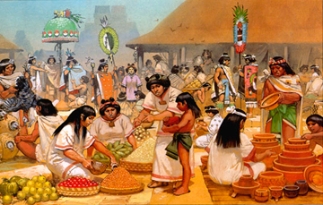
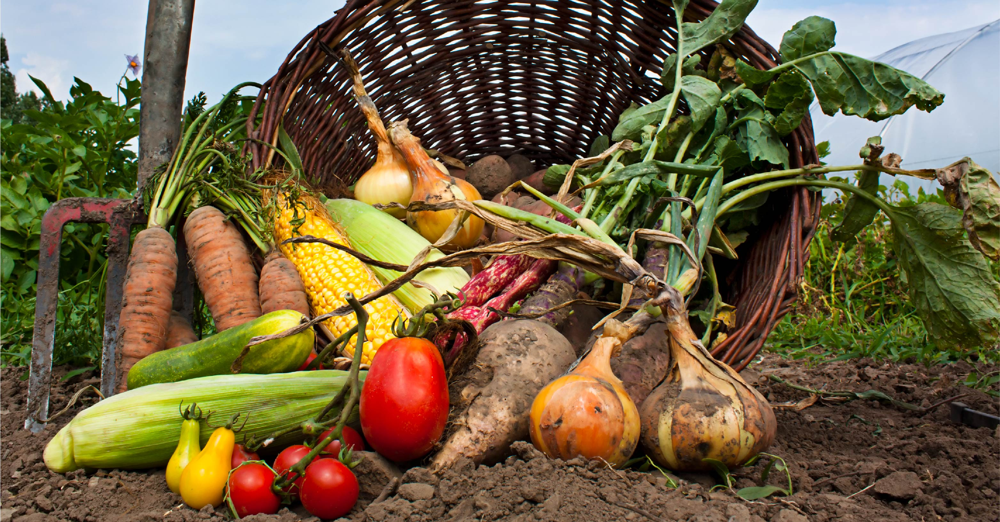

La historia de la gastronomía mexicana comienza en la época prehispánica, los pobladores de Mesoamérica, se menciona que los aztecas se las ingeniaron para gozar de los recursos acuáticos de los ríos, lagos y lagunas. También tenían y cultivaban muchas especies de plantas frutales, tales como piñas, mamey, zapotes varios: blanco, prieto, amarillo, chino, etc.; tejocote, ciruelas, tunas, papayas, jícamas, guayabas, chirimoyas, nanches, aguacates, capulines, cacahuates...y el famoso cacao.
Para complementar su alimentación, la cual fue pobre en proteínas y grasas, los antiguos pobladores de México acudieron a dos estrategias: la crianza de guajolotes y xoloitzcuintles; o bien la caza y recolección de todo tipo de animales. En el caso del consumo de insectos y gusanos (chinicuiles, chapulines, escamoles, jumiles, etc.); reptiles (iguanas y serpientes); batracios (ranas, axolotes, etc.); peces (boquerones, charales, pescado blanco, etc.); mamíferos (ardillas, ratas, tejones, venados, etc.) y aves (chichicuilotas, patos, codornices, etc.). De aquí el famoso dicho mexicano "Todo lo que corre, nada, se arrastra y vuela, va a la cazuela".


Con la llegada de los españoles en 1492 al imperio mexica se inicia una época de cambios tanto religiosos, políticos, raciales, sociales y de costumbres. Los españoles descubren este continente y quedan sorprendidos con la gran variedad de productos y técnicas que encontraron. Además del cerdo, la vaca (y todos sus derivados), las ovejas y todos los animales que se incorporaron a la gastronomía mexicana en la época de la conquista; con los españoles llegaron los cereales como el arroz y el trigo, la tortilla una lámina redonda hecha a base de maíz, forma parte fundamental de la cocina mexicana y se podría decir que es la base de la alimentación mexicana.
La conquista española dio paso a un largo periodo de intercambio de productos, dando origen al mestizaje, periodo en el que los mexicas aportan a la cocina española maíz, chile, frijol, cacao, semillas, frutas, flores, raíces, entre otras, llegando así arroz, trigo, animales, vinos y azúcar. Los españoles mejoraron las técnicas de agricultura y apicultura.
Durante los 300 años del Virreinato, la mezcla principal es entre lo indígena y lo español; de allí surge la "comida mexicana", salpicada con sabores árabes que llegaron a la península ibérica y con sabores asiáticos. A lo largo del siglo XIX empezó a perder terreno frente al café (grano de origen africano que llegó a México a finales del siglo XVIII); durante la presente centuria, sobre todo en la época posrevolucionaria, el llamado "café americano" desbancó en definitiva al chocolate, en buena medida por la influencia de los hábitos originados en Estados Unidos.
El trigo, desde el siglo XVI, trajo gran variedad de panes, que adoptaron increíble número de formas, sabores y colores en las diversas regiones de México. Asimismo se arraigaron aquí los fideos, pasta de trigo que a España llegó por el largo camino de China (su lugar de origen) e Italia, a donde los llevó Marco Polo.
A partir del siglo XIX, después del hermetismo colonial derivado de la xenofobia y la intolerancia religiosa, nuestro país -recién nacido independiente- se abre a los visitantes e incluso inmigrantes extranjeros no españoles, quienes trajeron influencias enriquecedoras de las cocinas de Italia y sobre todo de Francia. La suma de los mestizajes durante los dos siglos del México independiente se refleja hoy en día en numerosos platillos: milanesas, omelettes, hot cakes, quiches, pizzas, pastes (en el estado de Hidalgo), sandwiches, mousses, budines, corn flakes, crepas, hot dogs, brochetas, escalopas, bisteces (beef steaks), cassatas, hamburguesas, pays, gratinados, giros, crotones, lasagnas, panqués (pancakes) y por supuesto los tacos al pastor, de origen libanés, turco y griego, que apenas llegaron a México hace pocas décadas.
Al concluir la Revolución mexicana. la gastronomía nacional fue ensalza levamente como parte del programa nacionalista de los gobiernos emanados. Durante el siglo XX, sobre todo en la época postrevolucionaria, el llamado café americano desbancó en definitiva al chocolate, en buena medida por la influencia de hábitos originados en Estados Unidos. Para principios del siglo XXI, en varias ciudades de México es posible encontrar restaurantes de las más diversas especialidades. Existen numerosos establecimientos de comida rápida, principalmente de origen estadounidense, que conviven con establecimientos que expenden la tradicional «garnachería».
Por fortuna, la comida mexicana no se presta a tales aberraciones. Hasta nuestros más sencillos antojitos, que se pueden comer de pie en una esquina, están hechos para deleitar, no para deglutirse a la carrera.